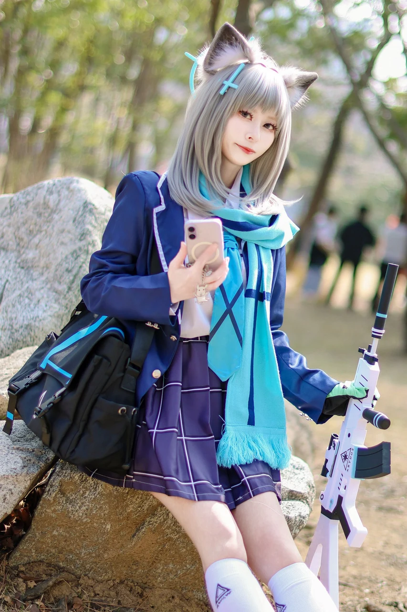
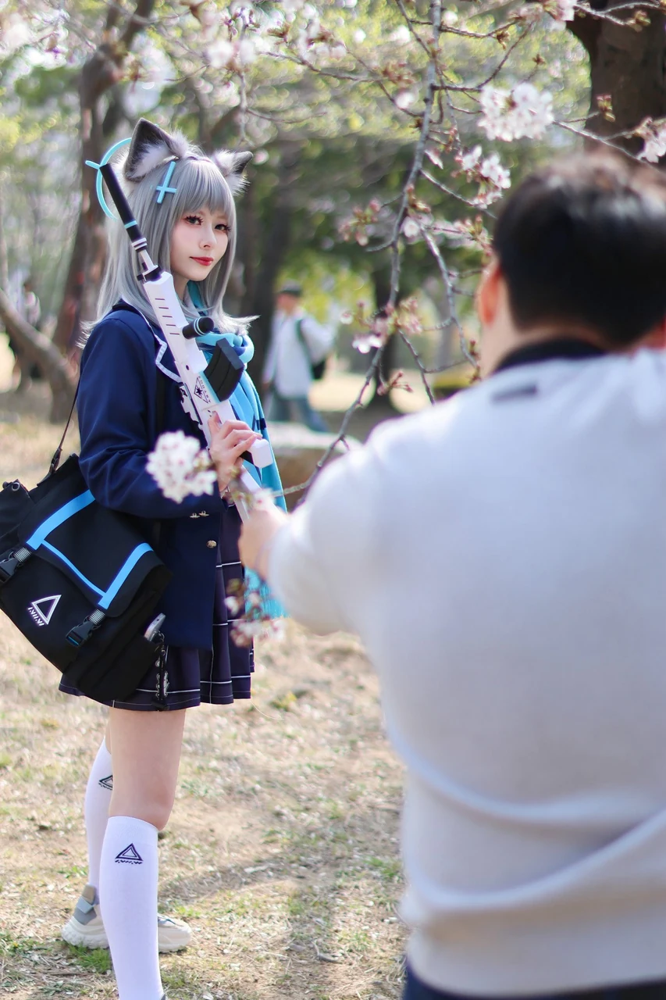
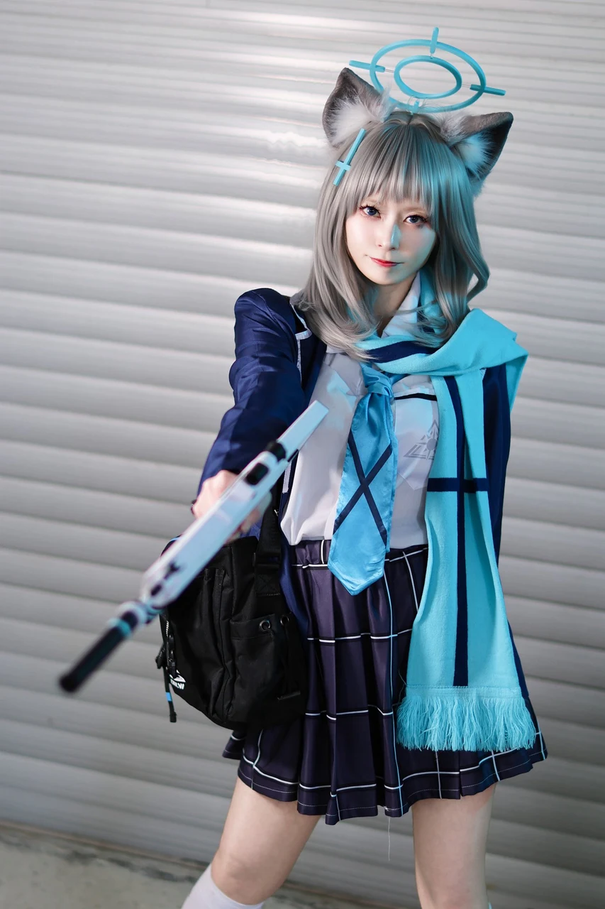
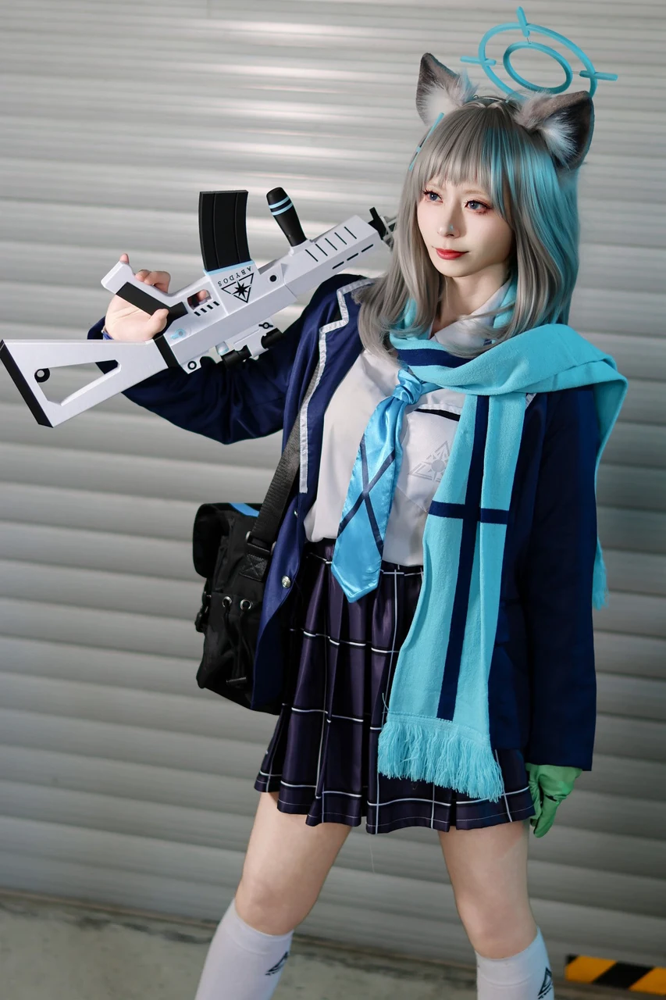

게시 2026-04-04 · 촬영 2026-03-28
“성장한 것 같아. 이것도, 선생님 덕분이야.”🎊 3부코 2026.03.28📸 파타퐁님 감사합니다👍🏻🧚🏻 시로코 기본행인1 @Esilles_K 님#부코 #3부코
모델 정보 미등록
“성장한 것 같아. 이것도, 선생님 덕분이야.”🎊 3부코 2026.03.28📸 파타퐁님 감사합니다👍🏻🧚🏻 시로코 기본행인1 @Esilles_K 님#부코 #3부코 #블루아카이브 #블아 #코스 #cos #cosplayer #BlueArchive #ブルーアーカイブ #시로코 #Shiroko #シロコ
원 게시자: 새쌁🌱 (@Anonymos_HUSH)
#46 


